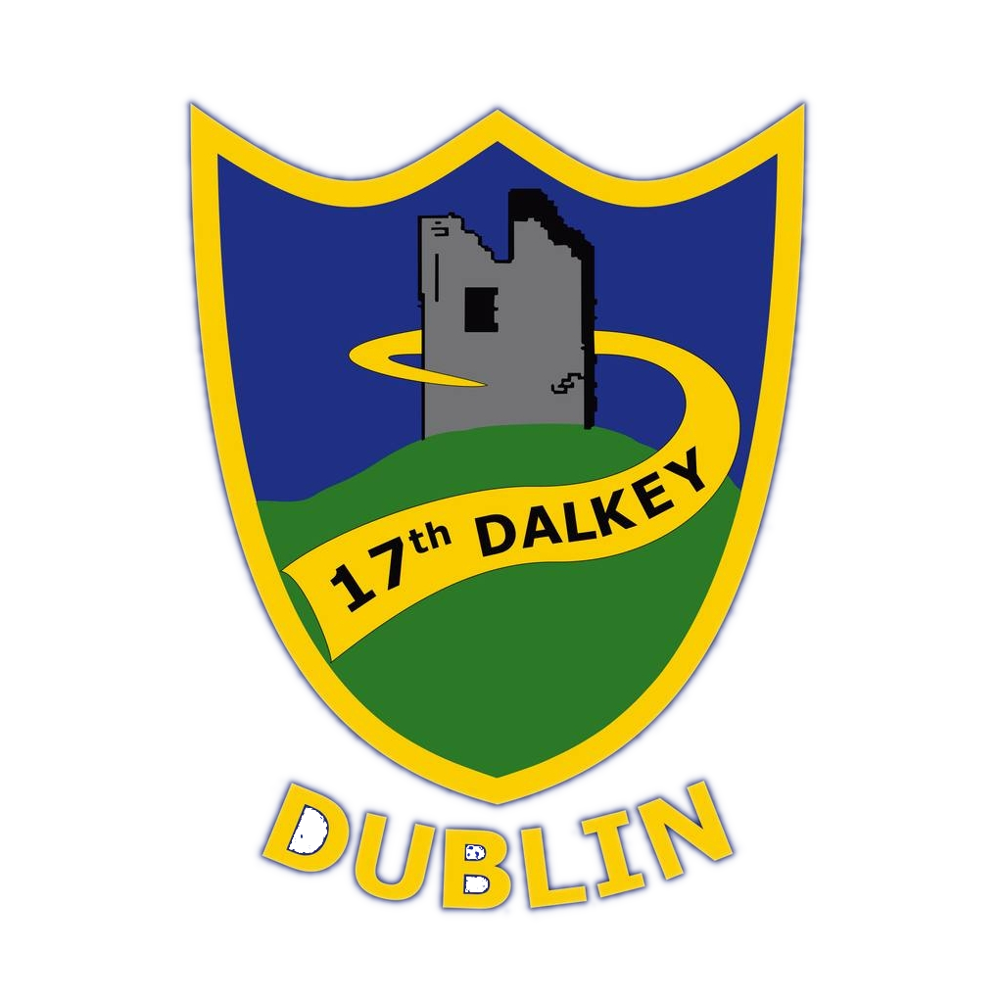

Beaver Scouts
Ages 6-8The youngest members of our scouting family, Beavers enjoy fun activities, make new friends, and learn about the world around them through games, crafts, and outdoor adventures.

The Adventure Starts Here
We are a vibrant Scout group in Dalkey, County Dublin, offering adventure, friendship, and fun for young people.
For the latest news and updates, follow us on Facebook.
Join Our AdventureAge-appropriate programs designed to help young people develop skills, make friends, and have fun.
The youngest members of our scouting family, Beavers enjoy fun activities, make new friends, and learn about the world around them through games, crafts, and outdoor adventures.
Cubs embark on more adventures, learning new skills through camping, hiking, badge work, and team activities. They develop independence and confidence in a supportive environment.
Scouts take charge of their own adventures, planning camps, expeditions, and activities. They develop leadership skills, outdoor expertise, and lifelong friendships.
We are currently exploring starting a Venture section.
We need Adult Volunteers to keep the group running. No experience in Scouting is necessary! Training will be provided by Scouting Ireland and you'll be working as part of a team with great supports from Scouting Ireland Support Teams.
Volunteering with the 17th Dalkey means you'll not only be improving the lives of young people but enhancing your own also. The benefits of volunteering in Scouting include making friends, learning new skills, and helping our local community flourish. You'll have the opportunity to take part in local, national and international events. And you'll help change young people's lives for the better.
Please get in touch!
VolunteerInterested in joining or have questions? We'd love to hear from you.
Email: info@dalkeyscouts.ie